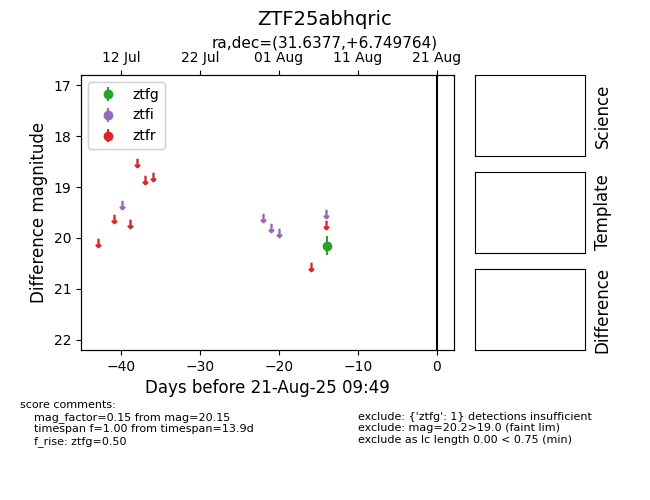

Target ZTF25abhqric at 2025-08-21 09:49, see:
FINK: fink-portal.org/ZTF25abhqric
Lasair: lasair-ztf.lsst.ac.uk/objects/ZTF25abhqric
ALeRCE: alerce.online/object/ZTF25abhqric
alt names
ZTF25abhqric (ztf,alerce)
coordinates:
equatorial (ra, dec) = (31.6377,+6.74976)
galactic (l, b) = (153.8705,-51.55283)
photometry
last ztfg=20.15
1 ztfg detections
